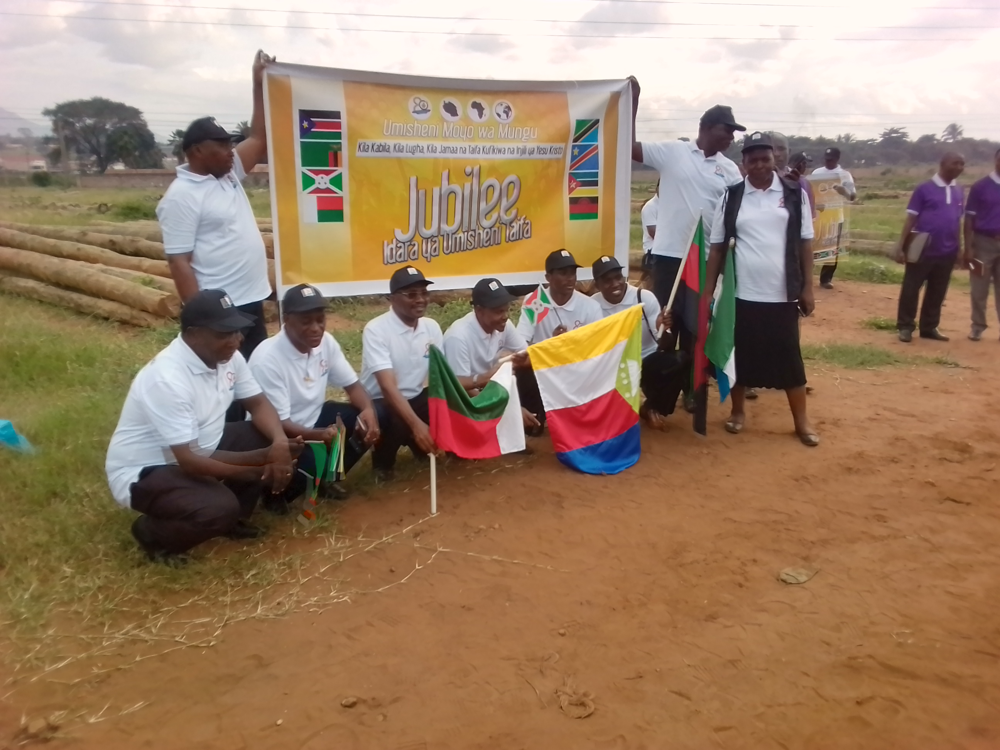

Picha Na Tukio Husika
Mch.Nicodemas Mwasamboma.
Mchungaji kiongozi na mwangalizi wa section ya mlandizi. Mkurugezi wa umisheni Jimbo la Pwani-magharibi.

Washirika
Washirika wakiwa katika kusikiliza mahubiri ndani ya moja ya ibada zetu.

Umisheni Taifa.
Siku ya jubilee ya umisheni kitaifa, pichani ni baadhi ya viongozi wa umisheni taifa.